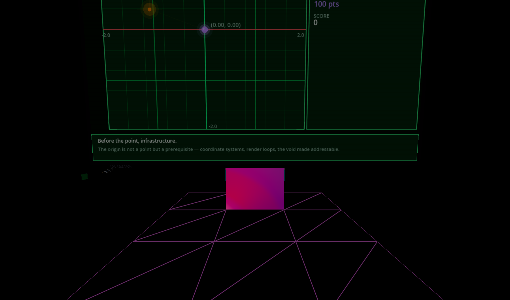
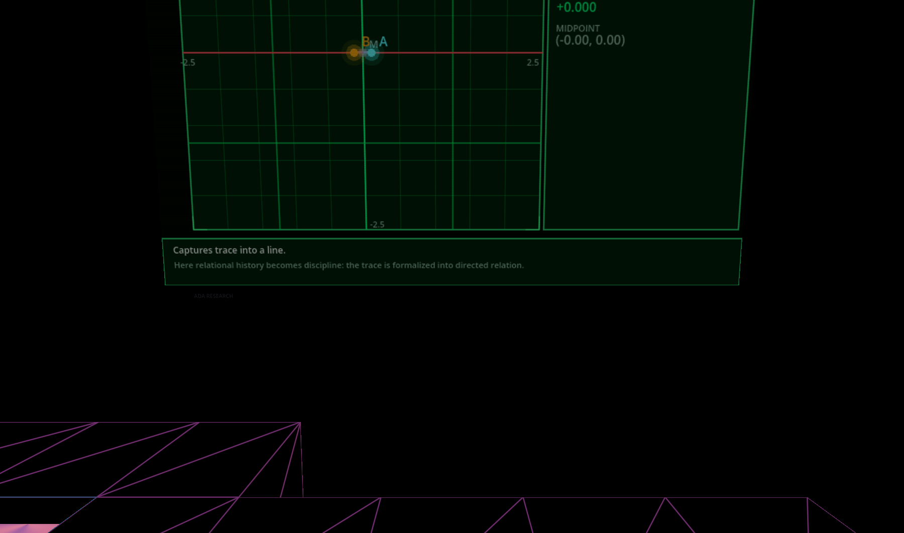
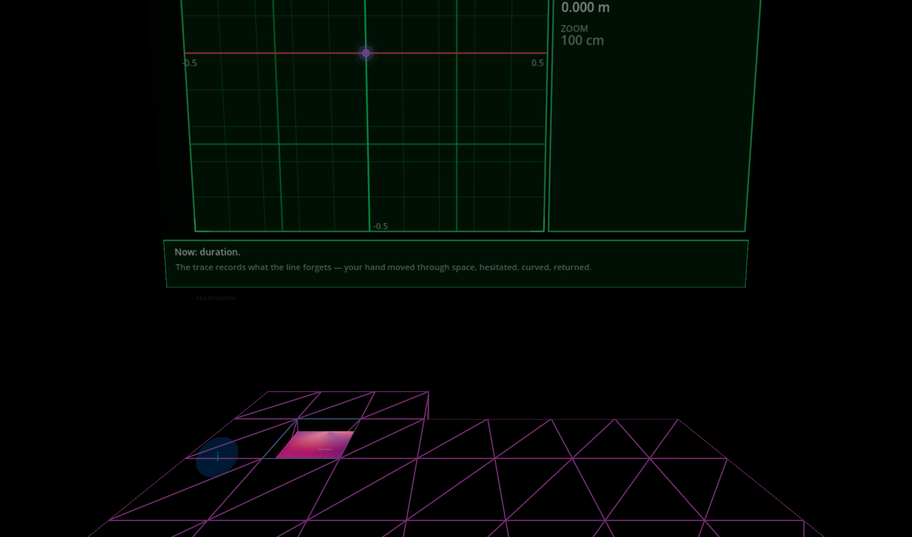
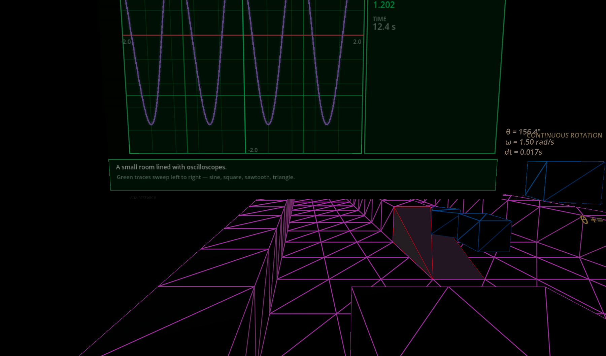
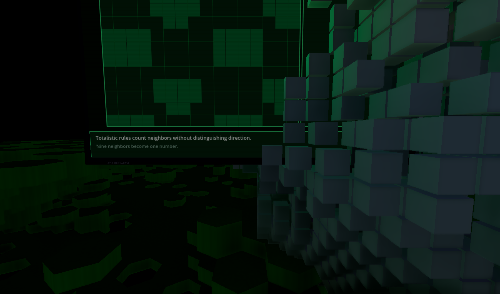
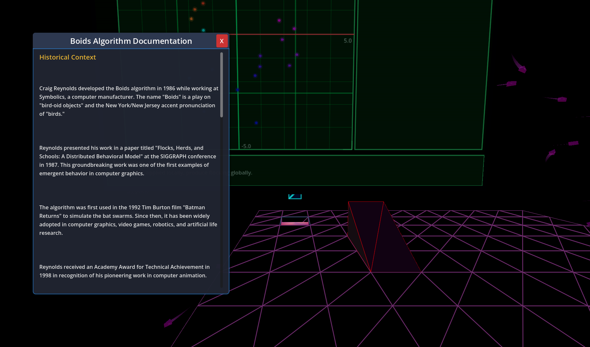
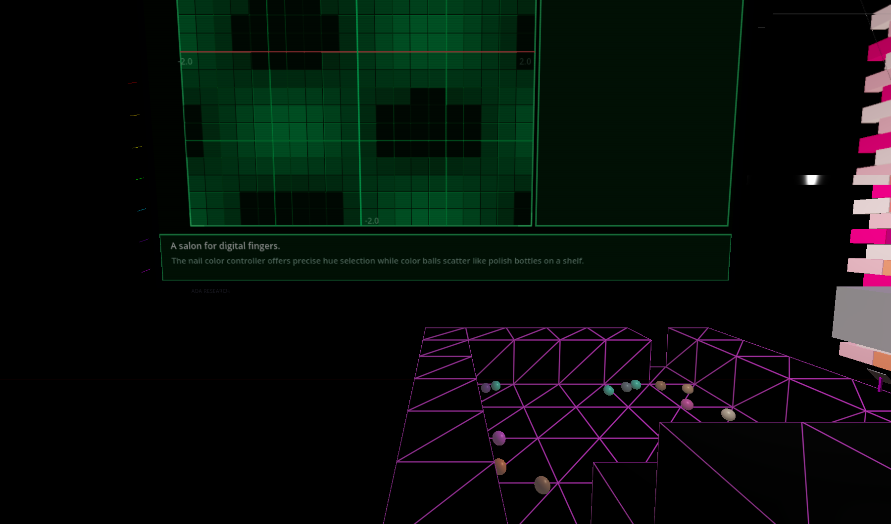
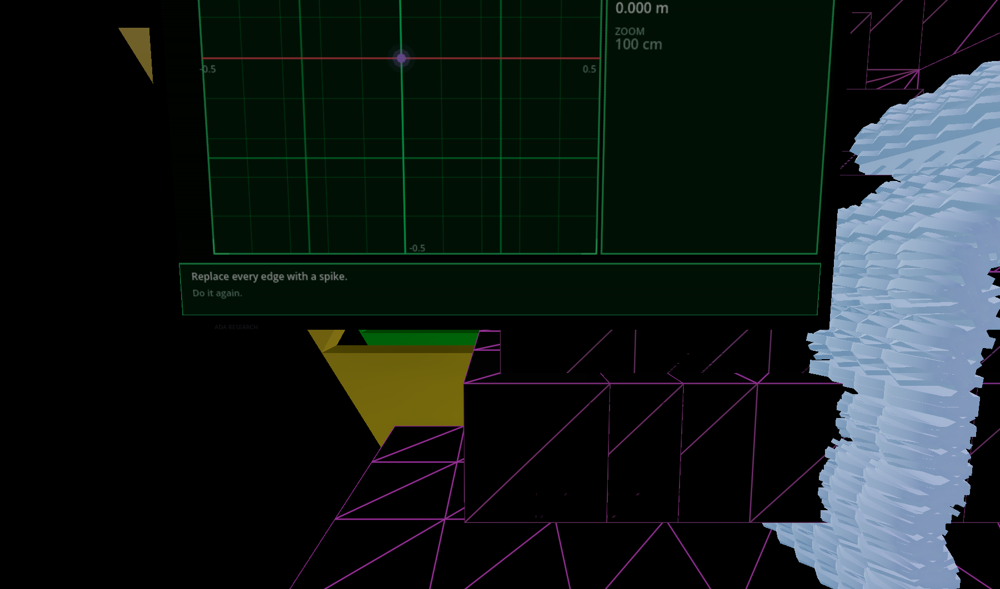
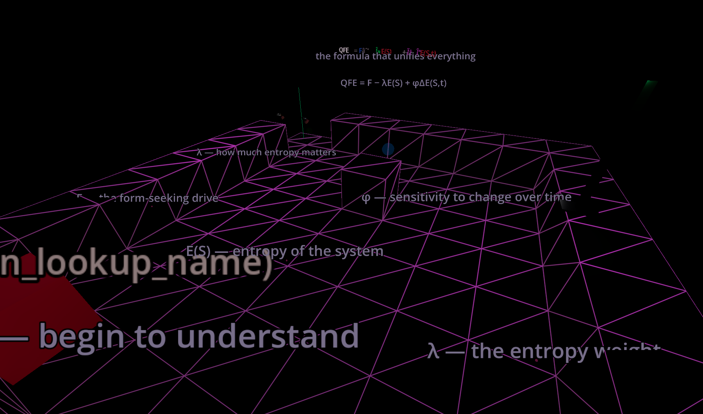

April 1, 2026
This session started with a bug ("why does the screen show mesh monitor?") and ended with 32 glowing green instrument screens deployed across every spine sequence in Ada Research. Along the way: three complete UI redesigns, a mode system, dynamic text from markdown files, and seven hard lessons about building for VR.

Point tracker — primitives

Line analyzer — primitives

Trace recorder — primitives

Waveform — wavefunctions

CA grid — cellular automata

Scatter — swarm intelligence

Field heatmap — color

Koch trace — fractals

QFEP waveform — synthesis
Every color that works on a web page needs to be 2–3x brighter for VR. A SubViewport renders pixels onto a 3D surface in a dark room. Dark pixels emit dark light. The fix wasn't shaders or post-processing — it was making the source content physically brighter and adding an OmniLight3D so the screen casts green light into the room. Going from 1.2x to 4x emission energy was the difference between invisible and glowing.
The original screen scanned nearby artifacts by name-matching: "point" in lookup, "line" in children. It worked for the first artifact and broke on every subsequent one. GrabPoint in the trace map got detected as a point. GrabSphere was nested too deep. Replacing it all with #mode:point in the map JSON — one config key — eliminated an entire class of bugs.
Web canvas, Godot 2D _draw(), and Godot 3D mesh are three different renderers showing the same data. The web is the design surface because you iterate fast. Godot 2D matches it with boosted contrast. The 3D is just the 2D on a mesh with emission. Design on web, port to Godot, boost for VR.
The screen was useless until it had three panels: visualization left, data right, info bottom. Before that, data was crammed into a tiny readout strip. The three-panel layout made every mode instantly readable — and it's the same layout the web pages use, so the visual language transfers.
We don't need a unique visualization for every artifact. Points, lines, traces, waves, fields, scatter plots, grids, and bar charts — that's 10 modes but really 7 patterns. Every artifact in the spine maps to one of these. The match statement in the draw dispatch is 17 lines. The entire mode system is one config key per map.
Hardcoding teaching messages was wrong. Loading sentences from blurb.md and intent.md means every screen automatically has the right philosophical and pedagogical content. The info bar cycles through "Before the point, infrastructure" and "Individuation from infrastructure — the point arrives late into a pre-existing field" without any per-mode text authoring. The content was already written. The screen just needed to read it.
The --duration=10 screenshot mode on the test player saved hours. Every change was verifiable without putting on a headset: load map, aim camera at screen, wait, capture, view. Without that, every iteration would have been: export → headset on → navigate to map → look at screen → headset off → change code → repeat. The test player paid for itself on the first iteration.
| # | Sequence | Screens | Modes |
|---|---|---|---|
| 1 | primitives | 5 | point, line, trace, triangle, net |
| 2 | transformation | 3 | point, wave, bars |
| 3 | color | 2 | field, grid |
| 4 | forces | 2 | line, scatter |
| 5 | array_tutorial | 2 | grid, point |
| 6 | wavefunctions | 1 | wave |
| 7 | randomness | 2 | scatter, grid |
| 8 | noise | 1 | field |
| 9 | cellularautomata | 1 | grid |
| 10 | fractals | 2 | bars, trace |
| 11 | lsystems | 1 | trace |
| 12 | proceduralgeneration | 1 | grid |
| 13 | softbodies | 1 | field |
| 14 | swarmintelligence | 2 | scatter |
| 15 | machinelearning | 1 | scatter |
| 16 | foundationscrisis | 1 | grid |
| 17 | qfeplaboratory | 2 | wave, scatter |
| 18 | postfoundationscrisis | 1 | scatter |
The screens are placed but most show demo patterns (procedural sine waves, random scatter, generated grids). The next step is wiring each screen to actually read live data from its nearby artifact — real boid positions, real CA cell states, real pendulum angles. The visualization infrastructure is done. Now it needs real data flowing through it.
The other open question: should the .tscn layout files replace the procedural _draw() code? We created screen_layout.tscn and screen_theme.tres for visual editing, but the current system still uses the inner class. The hybrid approach — static layout as a scene, dynamic data as _draw() overlay — would let designers tweak colors in the Godot editor without touching code.
Session: From "mesh monitor" bug to 32 deployed Science Screens across all 19 spine sequences. Seven lessons about building for VR.